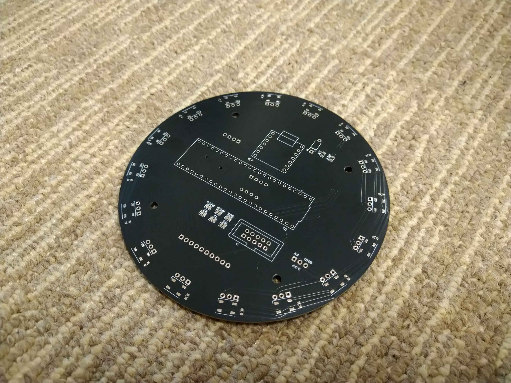
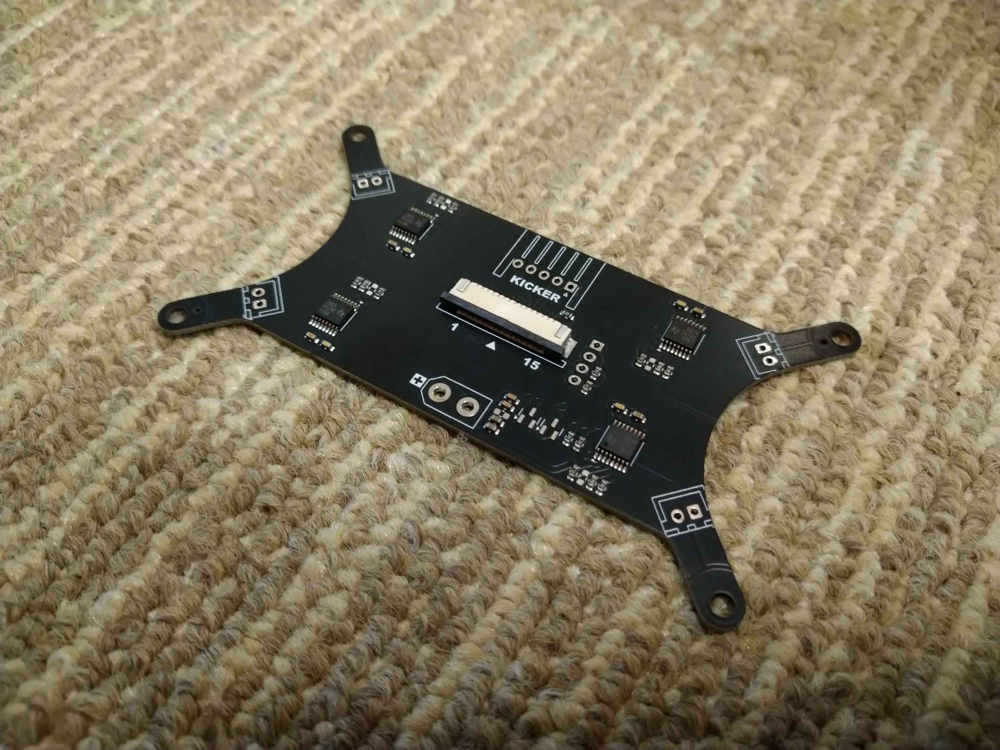
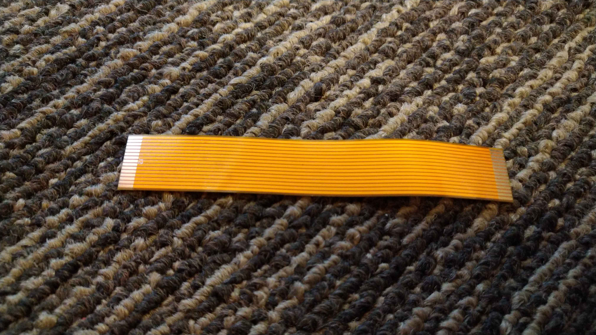

TOINIOT² Blog
基板ー‼
2024-08-05 Writer: 010
こんにちは。今回の記事は前々回に続いてJLCPCB様に基板を頼ませてもらったお話。


左はメイン基板、右はMD基板です。過去の記事でも何度も触れていますが、両方ともロボットの要だったり、大電流が流れたりと重要な部分です。
失敗は絶対に許されません。だからこそ、低価格高クオリティを誇るJLCPCB様に頼む意義があると思います。
さて、ここで上の基板を製作してくださり、私たちのチームにとって無くてはならない存在であるJLCPCB様についての紹介です。
JLCPCBは主に基板製作を手掛けている会社です。しかし、それだけではなく、3DプリントやCNC加工なども行っており、彼らに作れないものはない！と言っても過言ではありません。
そして、JLCPCB最大の特徴は「安い」「早い」「正確」の3拍子がそろっていること。商品自体は１＄から発注可能、工場は海外にあるのに、空輸とはいえ発注から2週間かからずでの到着はかなり魅力的です。
しかもこの2週間とはあくまでも通常配達での話。速達サービスを使えば数日で届きます。1週間もかかりません。ここでもう一度言っておきます。出荷元は海外です！日本ではありません‼凄すぎ…
もちろん、確立された機械生産によって不良品に当たる可能性はほとんどなく、少なくても僕たちは一度も遭遇していません(僕たちの設計ミスはたくさんありましたが(笑))。今ならクーポンもゲットできるみたいです。
この機会をお見逃しなく！！

↓JLCPCB様のHP
https://jlcpcb.jp/
↓クーポンゲットのチャンス！
・新規ユーザー$60クーポン
https://jlcpcb.com/JPV
・その他のクーポン
https://jlcpcb.jp/coupon-center?from=6layer
それでは今日はここまd…
おっともう一つ話さなければならないことがあるのを忘れていました。
↓↓↓↓↓↓それがこちら！↓↓↓↓↓↓

これは「フレキシブル基板(FPC)」というものです。一般的な基板は硬くて曲げることなど当然できませんが、こちらは容易に曲げることができ、
ロボットの狭いスペースでも楽々繋げます。僕たちは、ロボット最下部と最上部にあるラインセンサとメイン基板を繋ぐケーブル代わりに使っています。
というのも昨年はフラットケーブルを使用していたのですが、線がまとまっている一方長さの調整ができない(厳密にはできますが技術的に断念しました)というデメリットを抱えており、
結局ロボットのスペースを奪ってしまったのです。その点FPCは長さは自由自在。若干接続部分が繋ぎづらくなるものの、頻繁に取り外す箇所でなければ問題ありません。
そして、普通の基板はエッチングを用いて何とか自作することはできますが、(できるとは言え、かなりの確率で失敗します。
JLCPCB様に発注することを強くお勧めします！)FPCは100%無理です。そこでJLCPCB様の登場!回路ミスなど起こりえないのはもちろん、見た目も市販品そのものです。ホームの記事写真のように文字や
ロゴの印刷もOK!ぜひ皆さんも頼んでみてください(^▽^)/
今回はここまで。最後まで読んでいただきありがとうございました。